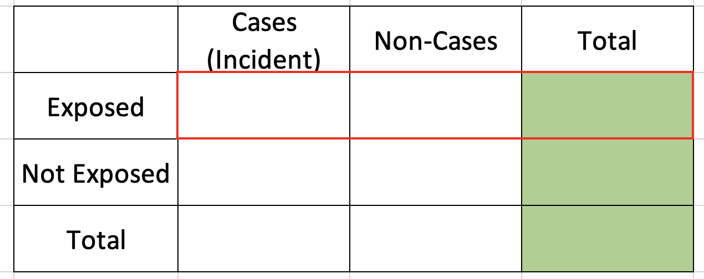
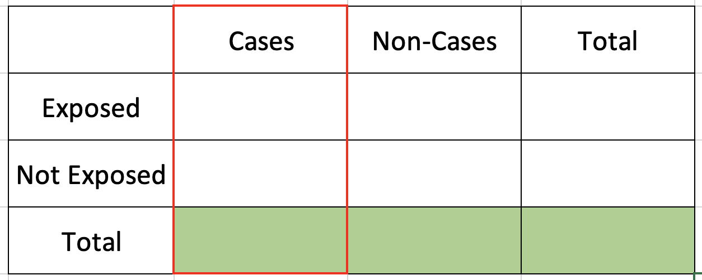
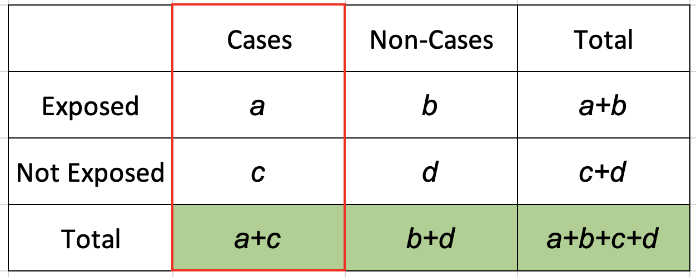

Dr Abhijit P Pakhare
All India Institute of Medical Sciences, Bhopal
Risk
Non-event to event
Temporality
Incidence
Relative risk
Attributable risk
Long latency period of chronic diseases
Smoking ~ CVD, Lung cancer
Diet & exercise ~ Osteoporosis
Disease incidence ~ relatively few
Very rare diseases- cohort way inefficient
mid 2000s, ~ unusual form of femoral fracture in women
Bisphosphonates suspected because
newly introduced at that time
act by reducing bone remodeling.
Case series ~ bisphosphonates and atypical fractures,
other drugs
other diseases
Whether bisphosphonates were independently associated with atypical fractures?
Bisphonates use and atypical fractures of femoral shaft(Schilcher, Michaëlsson, and Aspenberg 2011)
Control in other situations
Experimental studies
Diagnostic laboratories
Case-control study-
those who do not have disease or outcome
controls- take in account or subtract the effects of other variables
Diagnosis - rigorously confirmed
All cases or representative sample from defined population
Hospital cases
Severity or atypical nature
Catchment area
Validity- comparability of cases and controls
Cases and controls should be members of same base population
Random sample of non-cases
Methods of selection
Population approach
Cohort approach
Hospital & Community approach
Random sample of defined population
Dynamic population
Cases and controls selected at similar calender time
Cases and control sampled from same cohort
All cases and random sample from base cohort
All cases and random sample at the time of incident case
When variables not available in cohort base are to be studied
not collected at base
additional biomarkers
genetic analysis
missing information from records
additional questionnaire
Hospital
Select comparable controls
Cases from hospital ward- controls from a different disease from same hospital
Hospitalized patients usually have different distribution compared to the rest of the population
Community
From catchment area of hospital
Neighborhood controls
More than one control group
Community
Hospital
Another disease
Non-diseased - Caregivers
Odds ratios across groups
Different from multiple control groups
More than 1 control for a cases
Useful in case of very rare disease as cases will be few
To improve statistical power
Maximum up to 3 to 4 controls per case
Complete & accurate records before development of disease
Can be done for prescriptions, medical records of investigations, procedures or done on stored samples
Behavioral exposures
Diet, exercise, substance use etc Disease status may influence recall
Exposure measurement methods and tools to be same for both cases and controls
We know totals of exposed and non-exposed since we only fix them
We estimate incidence in exposed & non-exposed and compare relative incidence 
We know totals of Cases and Non-cases since we only fix them
We estimate exposure odds among cases & non-cases & compute ratio of two odds 
\(Odds\ of\ exposure\ in\ Cases = \frac{Number\ of\ exposed\ among\ Cases}{Number\ of\ non-exposed\ among\ Cases}\)
\(Odds\ of\ exposure\ in\ Cases = \frac{a}{c}\)
\(Odds\ of\ exposure\ in\ Non-Cases = \frac{Number\ of\ exposed\ among\ Non-Cases}{Number\ of\ non-exposed\ among\ Non-Cases}\)
\(Odds\ of\ exposure\ in\ Non-Cases = \frac{b}{c}\)
\(Odds\ ratio = \frac{Odds\ of\ exposure\ among\ Cases}{Odds\ of\ exposure\ among\ Non-Cases}\)
\(Odds\ ratio = \frac{ad}{bc}\)
Association of exposure and outcome
OR > 1 (more than one)
OR < 1 (less than one)
OR =1 (nearly one)
Outcome + Outcome - Total Prevalence * Odds
Exposed + 46 26 72 63.9 1.7692
Exposed - 13 237 250 5.2 0.0549
Total 59 263 322 18.3 0.2243
Point estimates and 95% CIs:
-------------------------------------------------------------------
Odds ratio 32.25 (15.44, 67.39)
Attrib fraction (est) in the exposed (%) 96.84 (93.16, 98.62)
Attrib fraction (est) in the population (%) 75.55 (60.42, 84.90)
-------------------------------------------------------------------
Uncorrected chi2 test that OR = 1: chi2(1) = 128.657 Pr>chi2 = <0.001
Fisher exact test that OR = 1: Pr>chi2 = <0.001
Wald confidence limits
CI: confidence interval
* Outcomes per 100 population units Prevalent cases
Hospitals
Severity
Socio-economic position
Differential selection probability
Hospital
Household / Best friend
Population
Poor or limited recall
Differential recall
Diseased or cases easily identify with exposure than non-cases
Differential misclassification
Chapter-6 Risk: From disease to exposure (Fletcher, Fletcher, and Msc 2013)
Chapter- 7 & 9 : Observational studies (Celentano and Szklo 2018)
Study Designs Workshop @ AIIMS Bhopal